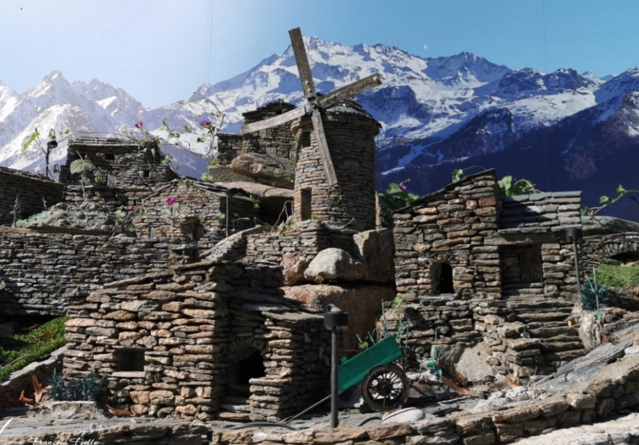

A Carcheto miniatűr falu nem egy profi turisztikai vállalat profitvezérelt projektje, hanem egy szívvel-lélekkel készült magánalkotás. Az ötletgazda és megvalósító, Antoine Albertini (közismert nevén Antoine de Carcheto) évtizedekkel ezelőtt határozta el, hogy saját kezűleg állít emléket szülőföldje és a Castagniccia halványuló építészeti örökségének. A makettfalu minden egyes apró háza, temploma és utcája a múlt iránti mély tiszteletből született, hogy a látogatók és a jövő generációi egyaránt testközelből láthassák, hogyan dacoltak a korzikaiak az idővel és a természettel a meredek hegyoldalakba vájt, robusztus kőházaikban.
A kiállítás igazi technikai és művészeti bravúr, amely elképesztő türelemről tanúskodik. Antoine Albertini nem használt mesterséges sablonokat vagy modern műanyag elemeket; a makették elkészítéséhez kizárólag a régióra jellemző, eredeti alapanyagokat gyűjtötte össze a környező völgyekből. Az épületek falai valódi hegyi palakőből (teghie) épültek fel, amelyeket a mester egyesével, kézzel válogatott, tört meg és illesztett egymáshoz, hűen követve a hagyományos szárazkolon-technikát. Az ablakkeretek, az apró fatetők és a parányi lépcsősorok precizitása láttán a látogató szinte elfelejti az arányokat, és úgy érzi, mintha egy életre kelt, mesebeli korzikai hegyvidéken sétálna.
A makettfalu elhelyezkedése még varázslatosabbá teszi az élményt: a miniatűr építmények közvetlenül a természetben, a Castagniccia fenséges gesztenyefáinak és mohás szikláinak ölelésében bújnak meg. Nem csupán statikus házak láthatók itt, hanem a hagyományos korzikai vidéki élet teljes infrastruktúrája: apró vízimalmok, harangtornyok, pici hidak és terek, amelyek hűen mintázzák a környező falvak szerkezetét. Carcheto makettjei között sétálva az utazó megértheti a belső Korzika igazi lényegét: az ember és a szikla megbonthatatlan szövetségét, amelyet ez a rendkívüli szabadtéri tárlat monumentális módon, mégis apró méretben tesz felejthetetlenné.